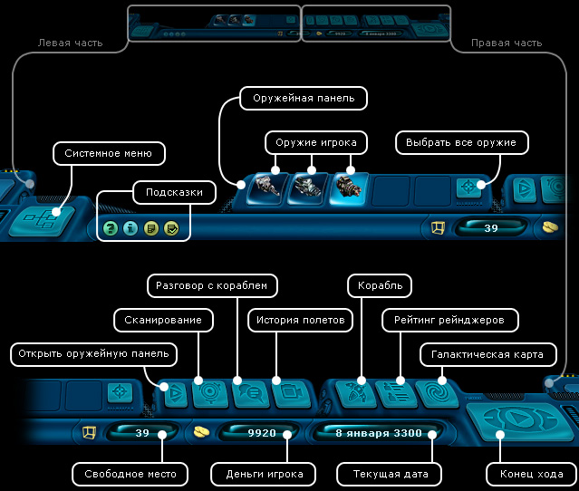
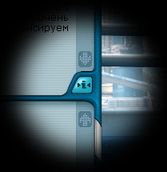

Руководство рейнджера > Панель навигации
|
Руководство рейнджера > Панель навигации
|
| Панель навигации Панель навигации находится в самом низу экрана и состоит из ряда элементов. |

|
Когда игрок наводит курсор мышки на какой-нибудь элемент интерфейса, на панели появляется краткое описание этого элемента и название соответствующей ему "горячей" клавиши, если таковая имеется. Сохраненная информация, иконка - Во многих диалоговых окнах игры имеется специальный элемент - . Это очень полезная возможность!  Нажав на такой значок, вы запоминаете в памяти бортового компьютера содержимое текущего окна, будь то цены на товары в торговом центре или новости в информационном портале. При этом на панели навигации появляется новая иконка Чтобы сохранить содержимое диалогового окна: Нажмите на значок , расположенный в этом диалоговом окне. Связанная с этим окном иконка появится на панели навигации. Чтобы просмотреть содержимое сохраненного ранее окна: Наведите курсор мыши на соответствующую иконку на панели навигации. Чтобы удалить сохраненное ранее окно: Щелкните правой кнопкой мыши по соответствующей иконке на панели навигации. Чтобы удалить все сохраненные ранее окна, иконки-подсказки, иконки выполненных заданий: Щелкните клавишу F12. Чтобы удалить все сохраненные ранее прайсы: Щелкните клавишу F11. Примечание. Работа с другими иконками-подсказками аналогична работе со значком |